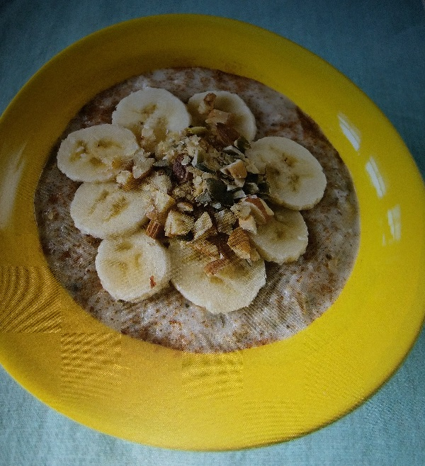
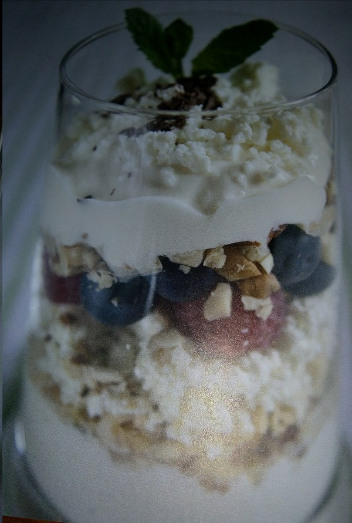
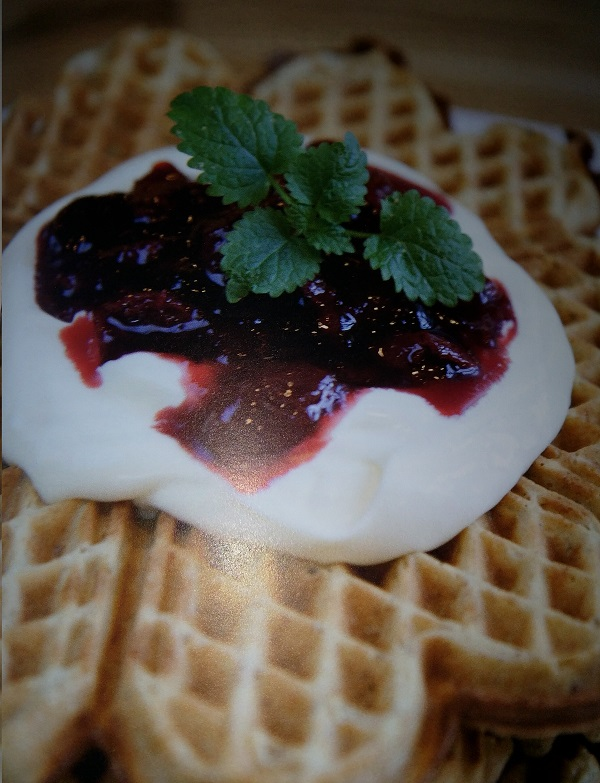

Den naturlige smaken av ubearbeidete ingredienser er en nytelse.
Havregrøt
Kilde: Berit Nordstrand; Mat med mer

Ingredienser
Til 2 porsjoner:
- 5 dl lettmelk
- 3 dl lettkokte havregryn
- 1 banan skåret i tynne skiver
- 1 ts kanel
- en liten klype salt
Kvernede frø / hakkede nøtter på toppen gjør susen.
F.eks. gresskarkjerner, hasselnøtter, paranøtter, valnøtter og hvetekim.
Fremgangsmåte og tips:
- Hell melk og havregryn i en kasserolle.
- Kok opp under omrøring.
- La småkoke et par minutter
- Server med kanel og søte bananskiver.
- Ha gjerne i litt sukker på toppen for sødmens skyld.
- Lag mel av nøtter og frø ved å kjøre dem i en foodprosessor på høyeste hastighet i 5-10 sekunder
- Rør melet inn i grøten før servering til små og store som "ikke liker nøtter".
Frokostkombo
Kilde: Berit Nordstrand; Mat med mer

Ingredienser
En porsjon:
- 1 dl youghurt (fullfett, naturell)
- 1 håndfull hakkede nøtter og frø
- 1 dl frokostblanding
- 2 ss cottage cheese
- 1 håndfull bær
Den naturlige smaken av ubearbeidete ingredienser er en nytelse.
Fremgangsmåte og tips:
- Fyll ingrediensene lag på lag i et glass
- Mørk sjokolade revet på toppen gir festpreg, kanel er også kjempegodt å ha til
- Syrlig, frisk smak kan dempes med 1 ss honning eller litt søtere frukt som annanas, banan eller revet kokos.
Grovbrødvaffel
Kilde: Berit Nordstrand; Mat med mer

Ingredienser
Til 2 små vaffelplater:
- 1 egg
- 1 ss smør
- 1 ss hvetemel
- 3 ss havregryn
- 3 ss sammalt rug
- 2 ss bygg
- 1 ss fullfet rømme
- 1 dl melk
- 1 klype kardemomme
Er det flere til frokost, er det bare gange opp med antall personer
Fremgangsmåte og tips:
- Bland alle ingrediensene
- Stek nydelige, nøringsrike grovbrødvaffelplater.